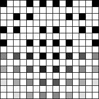
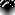

はじめに
インターフェース誌2015年6月号「超解像アルゴリズム」の記事を元に、分かりにくかった点を補足しつつ、全面的に一から解説し直します。
ICBI や iNEDI といったより良い手法もありますが、FCBI はそれらより処理が軽いので使い道はありますし、ICBI は FCBI をベースにしているので知っておいて損はないです。
尚、こちらのエントリの続きです。
- エッジ判定型超解像アルゴリズム FCBI (Fast curvature based interpolation) 前編:デモプログラムの使い方
デモを見た方が実感が湧くので、出来ればこの記事の前に前編をお読み下さい。
アルゴリズム概要
本家はこちらです。
- ICBI page
ICBI の 1st step が FCBI なので、その解説や実装も見つかります。
ポイント
- エッジを残しつつエネルギーが最小になるよう選択的に補間する
- エッジの場所は勾配(輝度の微分)の少ない軸方向で補間する
- 非エッジは勾配の変化(輝度の2次微分)が少ない軸方向で補完
- 倍のサイズ(正確には倍-1)への拡大のみ。スケール微調整は不可
- 尚、本家の参照実装(icbi.m)の拡大は (SIZE * 2^ZK) - (2^ZK-1) に対応しています。(ZK は zoom factor)
- 画像によって適切な値が異なる閾値 TM(Maximun edge step) を調整する必要がある。手動なり自動なり
- モノクロ画像のアルゴリズムなので、色差によるエッジは処理に反映されない
- イラスト画像は少し苦手 (最後の方で解説)
注意点
カラー対応
FCBI はモノクロ画像のアルゴリズムなので、カラフルな画像に対応する為にサンプルコードでは RGBA から計算した輝度 Y を用いました。JPEG の YCbCr の計算式に alpha を乗算します。
- https://github.com/yoya/image.js/blob/v1.5/fcbi.js#L75
function lumaFromRGBA(rgba) { var [r,g,b,a] = rgba; var y = 0.299 * r + 0.587 * g + 0.114 * b; return y * a / 255; }
フィルタ行列
インターフェース誌の記事では非エッジの勾配を調べるフィルタ行列との演算がテンソル積( )で示されますが、単なる畳み込みの計算なのでプログラム的には簡単です。
)で示されますが、単なる畳み込みの計算なのでプログラム的には簡単です。
つまり、近辺のピクセルの場所に応じて重み付けをした足し算です。
abs - h1, h2
インターフェース誌の記事も FCBI を説明する様々な論文でも端折ってますが、非エッジの勾配を比較するのは h1 < h2 でなく abs(h1) < abs(h2) です。 (このh1,h2 はインターフェース誌だと H1, H2。本家の参照実装だと展開されたベタな数式、論文だと I11, I22)
- https://github.com/yoya/image.js/blob/v1.5/fcbi.js#L232
- https://github.com/yoya/image.js/blob/v1.5/fcbi.js#L297
if (Math.abs(h1) < Math.abs(h2)) { var rgba = meanRGBA(rgba1, rgba4); } else { var rgba = meanRGBA(rgba2, rgba3); }
直感的にも abs を取らないと白い塗りと黒い塗りで結果が変わるでしょうし、本家の参照実装(icbi.m)では abs で括っています。
- https://github.com/yoya/ICBI/blob/master/icbi/icbi.m#L289
if( abs(IMGEXP(i-1-s,j-3+(2*s)) + IMGEXP(i-3+s,j-1+(2*s)) + IMGEXP(i+1+s,j+3-(2*s)) + IMGEXP(i+3-s,j+1-(2*s)) + (2 * p2) - (6 * p1)) > ... abs(IMGEXP(i-3+(2*s),j+1+s) + IMGEXP(i-1+(2*s),j+3-s) + IMGEXP(i+3-(2*s),j-1-s) + IMGEXP(i+1-(2*s),j-3+s) + (2 * p1) - (6 * p2)) ) IMGEXP(i,j) = p1;
既存のメソッドとの比較
画像の拡大はピクセルを広げて出来た隙間をどう埋めるのかが勝負です。色んな方法があります。

Nearest-Neighbor
恐らくもっとも速い方法です。近隣(Nearest-Neighbor)のピクセルをコピーします。
ちなみに丁度2倍の 6x4 だとこうなります。
Bi-Linear
線形(Linear)の計算で補間します。中学校で習う a と b の間の p 点 みたいな計算です。 丁度２倍にする例だと隣のピクセルを足して割る。つまり4隅または隣2つの平均値を用います。
RGB 値が色味に対して線形では無いので違和感がありますが、そこは目を瞑って頂ければ。。RGB の数値はちゃんと平均、真ん中の値です。
FCBI
Bi-Linear の亜種とも言えます。Bi-Linear だと単純に上下左右の４つから混ぜますが、FCBI はエッジをなるべく残すよう、４つのうち２つを選択して混ぜます。
FCBI の全体的な流れ
３つのフェーズで処理します。 Phase1 と Phase2 は同時に実行できますが、分かりやすいよう便宜的に分けます。
| 元画像 | Phase1 |
|---|---|
|
|
| Phase2 | Phase3 |
 |
大まかなアルゴリズム
詳細は後にして、まず処理の大雑把な流れです。
Phase1
- ピクセルを2倍の座標で再配置する
Phase2
- 斜め隣を見てエッジかどうか判定する
- 非エッジの場合
- 周辺８ピクセルから勾配の変化率を見て、変化が少ない方の２ピクセルを混ぜる
- エッジの場合
- 斜め隣の２軸のうち勾配が少ない方の２ピクセルを混ぜる
- 非エッジの場合
Phase3
- 上下左右の隣を見てエッジかどうか判定する
- 非エッジの場合
- 周辺８ピクセルから上下左右の勾配の変化率を見て、変化が少ない方の２ピクセルを混ぜる
- エッジの場合
- 上下、左右の２軸のうち勾配が少ない方の２ピクセルを混ぜる
- 非エッジの場合
各 Phase の詳細
Phase1: ピクセルを拡げる
単純にピクセルを2倍の座標で配置し直します。
function drawFCBI_Phase1(srcImageData, dstImageData, edgeMode) {
var dstWidth = dstImageData.width, dstHeight = dstImageData.height;
for (var dstY = 0 ; dstY < dstHeight ; dstY+=2) {
for (var dstX = 0 ; dstX < dstWidth ; dstX+=2) {
var srcX = dstX / 2; // srcX * 2 = dstX
var srcY = dstY / 2;
var rgba = getRGBA(srcImageData, srcX, srcY);
setRGBA(dstImageData, dstX, dstY, rgba);
}
}
}この手の処理は dstImage の縦横座標を元にループ処理をして、srcImage の対応する色を引っ張ってくるのが王道です。 ただ、今回のケースは丁度2倍でキリが良いので srcImage でループしても良いです。
- もう一つの方法
function drawFCBI_Phase1(srcImageData, dstImageData, edgeMode) { var srcWidth = srcImageData.width, srcHeight = srcImageData.height; for (var srcY = 0 ; srcY < srcHeight ; srcY+=1) { for (var srcX = 0 ; srcX < srcWidth ; srcX+=1) { var dstX = srcX * 2; // srcX * 2 = dstX var dstY = srcY * 2; var rgba = getRGBA(srcImageData, srcX, srcY); setRGBA(dstImageData, dstX, dstY, rgba); } } }
srcImage と dstImage の座標変換が整数倍じゃない時に破綻するので、習慣として自分は dstX, dstY でループしてます。(まぁ性能次第で適当に切り替えましょう)
Phase2: 斜め方向からピクセルを埋める

l1, l4、又は l2, l3 の平均値を真ん中のピクセルに埋めます。ここからの長々とした解説は、このどちらのピクセルを埋めるかを判断する処理についてです。
エッジ判定
abs(p1 - p2) ; p1=(l1+l4)/2, p2=(l2+l3)/2;
隣り合うピクセルの輝度に急激な変化があればエッジで、それ以外を非エッジだと判定します。
- https://github.com/yoya/image.js/blob/v1.5/fcbi.js#L196
/* l1 l2 * x * l3 l4 */ var rgba1 = getRGBA(dstImageData, dstX-1, dstY-1); var rgba2 = getRGBA(dstImageData, dstX+1, dstY-1); var rgba3 = getRGBA(dstImageData, dstX-1, dstY+1); var rgba4 = getRGBA(dstImageData, dstX+1, dstY+1); var l1 = lumaFromRGBA(rgba1); // RGBA から輝度 Y を算出 var l2 = lumaFromRGBA(rgba2); var l3 = lumaFromRGBA(rgba3); var l4 = lumaFromRGBA(rgba4); var v1 = Math.abs(l1 - l4); // 斜め方向の勾配 var v2 = Math.abs(l2 - l3); var p1 = (l1 + l4) / 2; // 斜め隣の平均 var p2 = (l2 + l3) / 2; // つまり p1 - p2 は斜め２軸の勾配 if ((v1 < TM) && (v2 < TM) && (Math.abs(p1 - p2) < TM)) { // 非エッジとして処理 } else { // エッジとして処理 }
非エッジの場合
補完するピクセルをどれにするか判断するのに斜め隣のピクセルだけでなく、もう少し広めのピクセルを見ます。非エッジの時は隣のピクセルの差分が少ないので仕方がないのと、単なる勾配でなく勾配の変化をみる為です。
| h1 のフィルタ | h2 のフィルタ |
|---|---|
補間したいピクセルの周辺の輝度を上記の重み付けで計算を行い、h1 と h2 の大小で勾配の変化の小さい向きを判定します。
例えば、こういうグラデーションがあるとします。
| h1のなぞり方 | h2のなぞり方 |
|---|---|
実際の計算は以下のようになります。
h1 = (6 + 4 + 2) - 3 * (5 + 3) + (6 + 4 + 2) = 0
h2 = (3 + 3 + 3) - 3 * (4 + 4) + (5 + 5 + 5) = 0
この例だとグラデーションの勾配が全領域で一定なので変化率は h1, h2 で変わりません。(悪い例でした、すみません)
- https://github.com/yoya/image.js/blob/v1.5/fcbi.js#L217
var l_m1m3 = getLuma(dstImageData, dstX-1, dstY-3); var l_p1m3 = getLuma(dstImageData, dstX+1, dstY-3); var l_m3m1 = getLuma(dstImageData, dstX-3, dstY-1); // l_m1m1 = l1; // l_p1m1 = l2; var l_p3m1 = getLuma(dstImageData, dstX+3, dstY-1); var l_m3p1 = getLuma(dstImageData, dstX-3, dstY+1); // l_m1p1 = l3; // l_p1p1 = l4; var l_p3p1 = getLuma(dstImageData, dstX+3, dstY+1); var l_m1p3 = getLuma(dstImageData, dstX-1, dstY+3); var l_p1p3 = getLuma(dstImageData, dstX+1, dstY+3); var h1 = (l_m3p1 + l1 + l_p1m3) - 3 * (l3 + l2) + (l_m1p3 + l4 + l_p3m1); var h2 = (l_m1m3 + l2 + l_p3p1) - 3 * (l1 + l4) + (l_m3m1 + l3 + l_p1p3); if (Math.abs(h1) < Math.abs(h2)) { var rgba = meanRGBA(rgba1, rgba4); } else { var rgba = meanRGBA(rgba2, rgba3); }
エッジの場合
エッジであれば、斜め２軸の隣どうしを見て、その差が少ない方の２ピクセルを線形補完するだけです。
- https://github.com/yoya/image.js/blob/v1.5/fcbi.js#L267
if (v1 < v2) { // v1:abs(l1 - l4), v2:abs(l2 - l3) var rgba = meanRGBA(rgba1, rgba4); // l1, l4 の中間の値 } else{ var rgba = meanRGBA(rgba2, rgba3); }
Phase3: 縦横方向からピクセルを埋める
 or
or 
Phase2 で参照するピクセルのあった斜め方向を左45度傾けて縦横にしただけです。 Phase2 とほぼ同じですので、図だけつけて細かい説明は省きます。
エッジ判定
- https://github.com/yoya/image.js/blob/v1.5/fcbi.js#L268
/* l2 * l1 x l4 * l3 */ var rgba1 = getRGBA(dstImageData, dstX-1, dstY); var rgba2 = getRGBA(dstImageData, dstX , dstY-1); var rgba3 = getRGBA(dstImageData, dstX , dstY+1); var rgba4 = getRGBA(dstImageData, dstX+1, dstY); var l1 = lumaFromRGBA(rgba1); var l2 = lumaFromRGBA(rgba2); var l3 = lumaFromRGBA(rgba3); var l4 = lumaFromRGBA(rgba4); var v1 = Math.abs(l1 - l4); var v2 = Math.abs(l2 - l3); var p1 = (l1 + l4) / 2; var p2 = (l2 + l3) / 2; if ((v1 < TM) && (v2 < TM) && (Math.abs(p1 - p2) < TM)) { // 非エッジとして処理 } else { // エッジとして処理 }
非エッジの場合
| h1 のフィルタ | h2 のフィルタ |
|---|---|
 |
- https://github.com/yoya/image.js/blob/v1.5/fcbi.js#L292
var l_m1m2 = getLuma(dstImageData, dstX-1, dstY-2); var l_p1m2 = getLuma(dstImageData, dstX+1, dstY-2); var l_m2m1 = getLuma(dstImageData, dstX-2, dstY-1); // l_z0m1 = l2 var l_p2m1 = getLuma(dstImageData, dstX+2, dstY-1); // l_m1z0 = l1 // l_p1z0 = l4 var l_m2p1 = getLuma(dstImageData, dstX-2, dstY+1); // l_z0p1 = l3 var l_p2p1 = getLuma(dstImageData, dstX+2, dstY+1); var l_m1p2 = getLuma(dstImageData, dstX-1, dstY+2); var l_p1p2 = getLuma(dstImageData, dstX+1, dstY+2); var h1 = (l_p1m2 + l4 + l_p1p2) - 3 * (l2 + l3) + (l_m1m2 + l1 + l_m1p2) var h2 = (l_m2m1 + l2 + l_p2m1) - 3 * (l1 + l4) + (l_m2p1 + l3 + l_p2p1); if (Math.abs(h1) <= Math.abs(h2)) { var rgba = meanRGBA(rgba1, rgba4); } else { var rgba = meanRGBA(rgba2, rgba3); }
エッジの場合
- https://github.com/yoya/image.js/blob/v1.5/fcbi.js#L312
if (v1 < v2) { // v1:abs(l1 - l4), v2:abs(l2 - l3) var rgba = meanRGBA(rgba1, rgba4); } else{ var rgba = meanRGBA(rgba2, rgba3); }
ドット画像でテスト
実際の画像に適用してみます。

Phase1: ピクセルを拡げる

Phase2: 斜め方向からピクセルを埋める
Phase3: 縦横方向からピクセルを埋める

気持ち悪いくらい、なめらかに補間されてます。
イラストでのテスト
既存のリサイズ方式との比較表が、前編の後半にありますが、改めて別のイラストで実験します。
 Copyright: https://twitter.com/myuton0407/status/693361955000549376
Copyright: https://twitter.com/myuton0407/status/693361955000549376
% convert Kotori.png -filter box -resize 200%x200% Kotori-box.png # N-Neighbor
% convert Kotori.png -filter triangle -resize 200%x200% Kotori-triangle.png # Bi-Linear
% convert Kotori.png -filter cubic -resize 200%x200% Kotori-cubic.png
% convert Kotori.png -filter lanczos -resize 200%x200% Kotori-lanczos.png
% convert Kotori.png -filter mitchell -resize 200%x200% Kotori-mitchell.png
ちなみに、ImageMagick の画像拡大のデフォルトが Mitchell です。
| Nearest-Neighbor | Bi-Linear | Bi-Cubic (B,C = 1,0) |
|---|---|---|
 |
 |
 |
| Lanczoz (lobes:3) | Mitchell-Netravali | FCBI (TM:12) |
 |
 |
 |
ぱっと見では Mitchell-Netravali フィルタが良い勝負をしていますが、細かいところまで見ると FCBI に分配があがります。
FCBI の弱点
問題1) width:1 の線
FCBI はグラデーションの無いベタ塗りの上に引いた width:1 の線が苦手です。実写の画像だと殆ど問題ないのですが、イラストだと結構このパターンが出てきます。
| テスト画像 | ドット拡大表示 |
|---|---|
 |
 |
 |
 |
 |
 |
|  |  |
これはエッジの時は近隣の４ピクセルしか見ない為です。
/* l1 l2
* x
* l3 l4
*/
if (v1 < v2) { // v1:abs(l1 - l4), v2:abs(l2 - l3)
var rgba = meanRGBA(rgba1, rgba4);
} else{
var rgba = meanRGBA(rgba2, rgba3);
}このケースだと v1(上記の例だと白-白) と v2（黒-黒) の差がなくなるので、 どちらを補間すれば良いのか判断がつかなくなります。

(v1 < v2) の条件式なので、 l2, l3 (右肩上がりの斜め)を使ってしまいます。
つまり、グラデーションの少ないベタ塗り部分に右肩下がりの細い線があると、うまく補間できないという事です。
改善
改善のエントリが長くなったので、別にしました。
- エッジ判定型超解像アルゴリズム FCBI (Fast curvature based interpolation) おまけ:アルゴリズム改造
結果
元画像:
| FCBI オリジナル | 改造 take1 | 改造 take2 |
|---|---|---|
 |
 |
途切れ途切れになっていた線が、スムーズに繋がりました。
問題2) 星空
こちらの方が本質的な問題ですが、星空のように眩しい点が沢山ある時に勝手に繋がる事があります。
 => (改造前) (改造後)
=> (改造前) (改造後)
ただ、元の写真に無視できないレベルの歪みがあるので、高精度な写真だとまた話が違うかもしれません。
さいごに
思った事をつらつらと。
- h1, h2 のフィルタは今後 ICBI に話を繋げる為に行列表現で考えた方が良いかも。
- 画像全体の明るさ次第で TM が極端に変わるので、ヒストグラム平均化した方がよさそう
- 輝度Yでなく色差も使った方が良いはず。イラストだと特に
- FCBI のせいでは無いけれど、JPEG 画像のモアレが余計に目立って悲しい事もある
漏れや間違いに気付き次第、なるべく全部直します。ご指摘頂けると幸いです。
参考
- Interface 2015年6月号 (CQ出版)
- ICBI page
- Real time artifact-free image upscaling
- Comparative Analysis of Edge Based Single Image Superresolution
- Parameter Optimization Of Fast Curvature Based Interpolation Using Genetic Algorithm
- Performance Evaluation of Edge‐Directed Interpolation Methods for Images Abstract